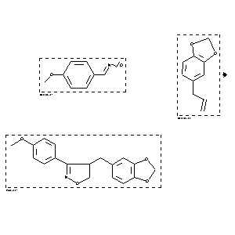

|  |
| FA | RX(1); FLST(1); RX(1) |
Reaction (1 of 1)
| Reaction ID | 1767827 |
| Reactant BRN | 1072149; 136380 |
| Reactant | 4-methoxy-benzaldehyde oxime; 5-allyl-benzo[1,3]dioxole |
| Product BRN | 4819636 |
| Product | 3-(4-methoxy)phenyl-4-(3,4-methylenedioxy)benzyl-4,5-dihydroisoxazole |
| No. of Reaction Details | 1 |
Reaction Details (1 of 1)
| Reaction Classification | Preparation |
| Reagent | 1.) iodobenzene dichloride, pyridine |
| Other Conditions | 1.) chloroform, RT, 0.5 h, 2.) chloroform, reflux, 5 h |
| Comment | Yield given. Multistep reaction |
| Citation Pointer | 5589730; Journal; Radhakrishna, A S; Sivaprakash, K; Singh, B B; SYNCAV; Synth.Commun.; EN; 21; 15,16; 1991; 1625-1629; |
Reference (1 of 1)
| Citation Number | 5589730 |
| Document Type | Journal |
| Authors | Radhakrishna, A S; Sivaprakash, K; Singh, B B |
| CODEN | SYNCAV |
| Journal Title | Synth.Commun. |
| Language Code | EN |
| (Series) Volume | 21 |
| Number | 15,16 |
| Publication Year | 1991 |
| Page | 1625-1629 |